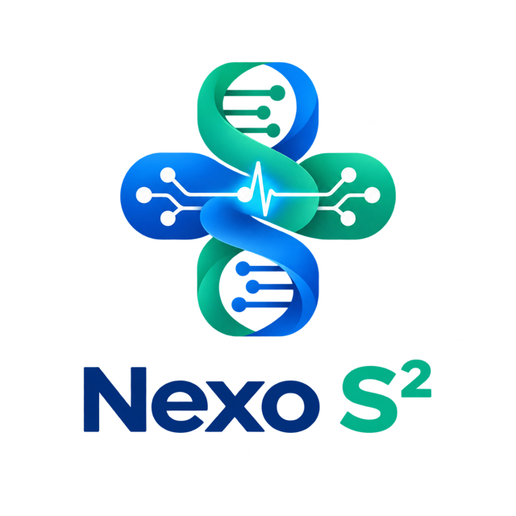

SUMIPABON
Compras y suministros: productos, proveedores, cotizaciones y órdenes de compra.
Comprobando…

Clínica Cardioneurovascular Pabón
Compras y suministros: productos, proveedores, cotizaciones y órdenes de compra.
Comprobando…
Copias de seguridad: inventario de backups del servidor y verificaciones.
Comprobando…